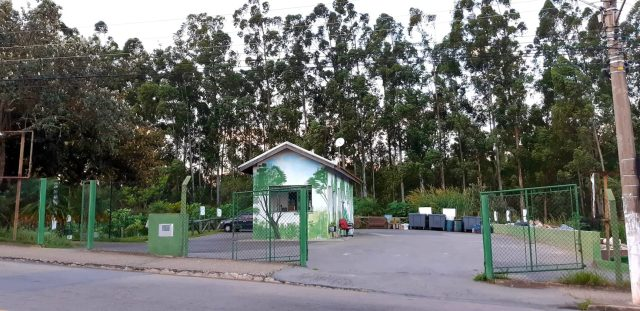

PARQUE ECOLÓGICO MORADA DA VINHAS
O Parque Ecológico Morada das Vinhas José Roberto Mota ‘Barroca’, um local onde antes havia um ponto ilegal de descarte de entulho, tem como novidade um Ecoponto, onde a população pode descartar gratuitamente entulho, pneus, madeiras, galhos, eletroeletrônicos, pilhas, baterias, lâmpadas, óleo de cozinha e material reciclável.
Toda a pista de caminhada, de 800 metros, foi feita com material reciclado no Centro de Gerenciamento de Resíduos Sólidos (Geresol). A calçada da área externa também. O Ecoponto funciona no mesmo horário que o parque: de segunda a domingo, das 6h às 19h.
Não é permitido o descarte de animais mortos, medicamentos, lixo hospitalar e material orgânico.
Também é possível levar animais de estimação para passear dentro do local, pelo programa Vamos Juntos ao Parque.
O local conta também com academia ao ar livre; equipamento adaptado para pessoas com deficiência; playground com brinquedo adaptado para criança com deficiência; casa de escoteiro para um grupo que se instalará no local; horta com plantas medicinais; campo de malha; espaço para leitura; deck panorâmico; ponte de madeira suspensa; exposição permanente de grafite.

- Endereço: Av. Uva Niagara, s/n – Morada das Vinhas, Jundiaí - SP
- Horário de Funcionamento: Temporariamente fechado por conta da pandemia da Covid-19.
PARQUE ECOLÓGICO MORADA DA VINHAS
O Parque Ecológico Morada das Vinhas está localizado no Endereço:Av. Uva Niagara, s/n – Morada das Vinhas, Jundiaí - SP.